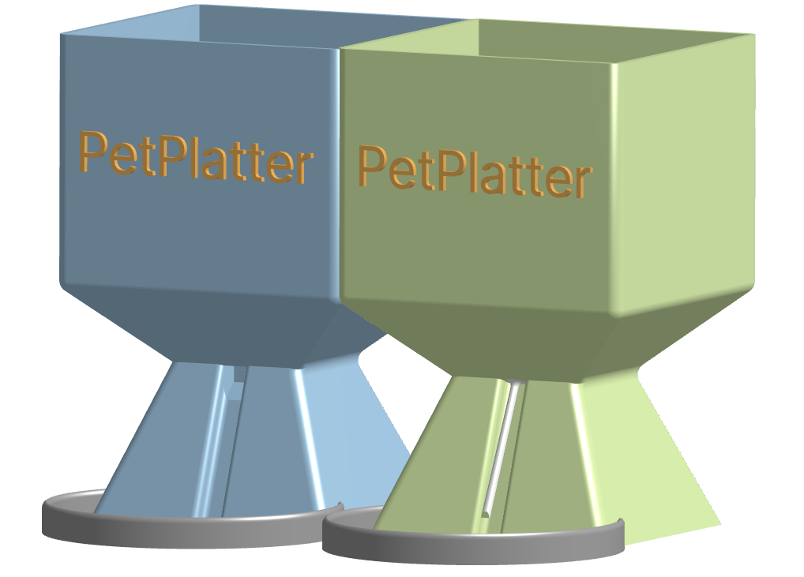
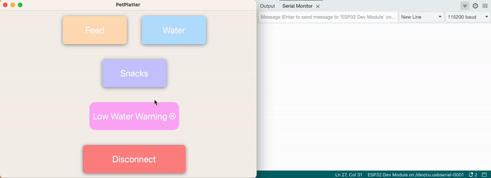
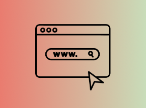
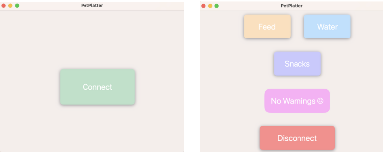
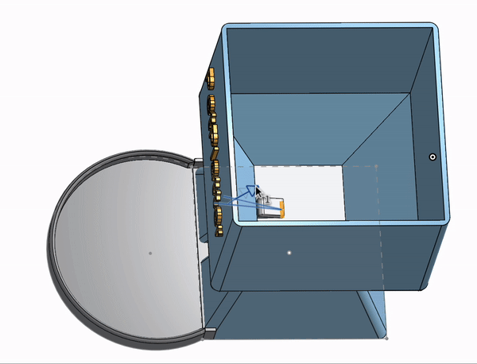

Device Outlook: Food Dispenser (Left) & Water Pump (Right)
Personal Project
2024
Mobile App Integration
Hardware Planning
Embedded Software
IoT Research
3D Modeling
July – August 2024
I really want a shiba (maybe more than one) in the future. It has inspired me to build my own pet-feeding device that I can control from afar. The heart of long-distance control is WebSockets — an IoT protocol that supports bidirectional, real-time, and persistent connections between clients and servers. Here, an iOS app and the physical device are connected for seamless communication and command execution.
The app contains features for feeding food and refilling water. More technical details can be found in the GitHub Repository.

The app successfully receives warnings and the device executes commands from the app.

The WebSocket server was initially hosted locally, which later transitioned to AWS Elastic Compute Cloud for improvements in security and reliability.

The iOS app has two views: a connection page and a main functionality page. When the app receives a low-water warning, it disappears automatically after the bowl is refilled.
An ESP32 was used for WiFi connectivity to interface with the WebSocket server.
The device uses servo motors to replenish food and a peristaltic liquid pump for water. The servo flips open a cap so food falls out, then closes it after a set time interval.

This project was genuinely fun to build. It introduced me to IoT protocols and deeper aspects of embedded software. The most exciting moments were when the WebSocket server correctly echoed messages and when everything came together with Swift for the app.